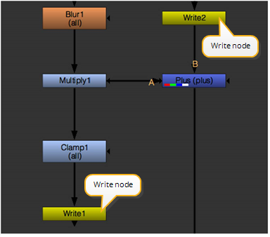
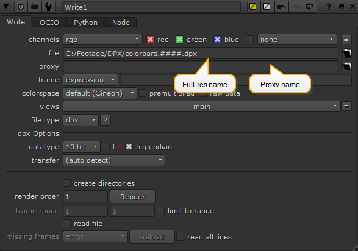
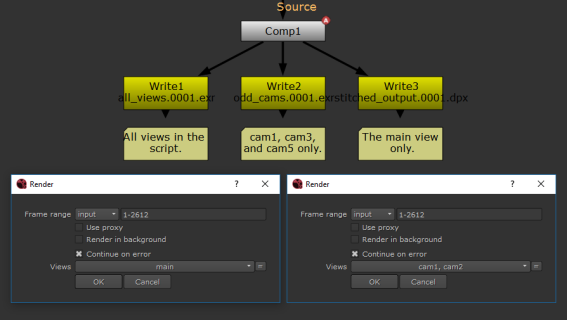

选择正确的分辨率和格式后，您可以插入写入节点，以指示要从脚本中渲染图像的位置。
|
 |
| 插入用于渲染的写入节点。 |
一个写节点通常放置在合成树的底部，以呈现最终输出。但是，写节点同时具有输入和输出连接器，因此它们可以嵌入到合成树的任何地方。
您可以为合成脚本中的单个写节点或所有写节点执行呈现。
| 1。 | 在脚本中选择要从中渲染图像的节点。 |
| 2. | 选择 图像> 写入 (或按 W 在节点图)。 Nuke 附加写入节点并打开其属性面板。 |
| 3. | 将查看器连接到要呈现的写入节点，并验证显示的输出分辨率是否正确。如有必要，按 Ctrl/Cmd + P 在完全分辨率和代理分辨率之间切换。显示的输出分辨率用于渲染。 |
| 4. | 在 “属性” 面板中，单击 文件 或 代理 字段的文件夹图标 (取决于要渲染高分辨率或低分辨率图像)，并浏览到要存储渲染序列的目录。有关说明，请参见 使用文件浏览器 . |

| 5. | 在路径后，键入渲染图像的名称，然后单击 好 。如果要渲染图像序列，请包括帧号变量 (例如, #### ) 的名字。 |
请参阅 呈现脚本中的选定或所有写入节点 下面是带有帧号变量的有效文件名示例。
| 6. | 如有必要，请调整以下控件: |
• 使用 渠道 下拉菜单和复选框，选择要渲染的通道。
• 使用 框架 下拉菜单和输入字段，设置当前处理的框架和写出的框架编号之间的关系。有关更多信息，请参见 更改渲染帧的编号 .
• 检查 读取文件 如果希望通过将渲染文件读回，而不是通过处理上游节点树来生成写入节点的输出。有关此和的更多信息 缺少帧 控制，请参见 使用写入节点读取渲染图像 .
• 从 色彩空间 下拉菜单中，选择在图像的颜色空间和 Nuke 它的内部色彩空间。
• 从 文件类型 下拉菜单中，选择渲染图像的文件格式。如果不指定文件格式, Nuke 使用文件名中的扩展名来计算格式。
• 检查 限制范围 如果要在指定帧范围之外执行时禁用节点，请选中此框。在 帧范围 字段中，输入要使用此写入节点进行可执行的帧范围。
| 7. | 在 “写入节点” 属性中，单击 渲染 按钮。 |
| 8。 | Nuke 提示输入帧范围，默认为您在 帧范围 字段。如有必要，更改开始和结束帧 (例如, 1-100 )，然后单击 好的。 |
提示:
指定要渲染的帧范围时，可以在 “帧范围提示” 对话框中输入复杂的帧范围。例如，如果您输入
1-5 8 10 15 22-25
,它只渲染这些帧。你也可以增加渲染帧使用类似的东西
10-50x10
,它仅解析为距离范围 10 、 20 、 30 、 40 和 50 的帧。
同样，您可以在命令行上指定多个范围，例如:
Nuke-F 1-5-F 8-F 10-F 15-F 20-40x5-x myscript.nk
提示: 使用 “写” 节点呈现时，可以通过在文件路径前添加数据类型和冒号来强制指定数据类型。例如，您可以输入 Ftiff: C: \ Temp \ test.ti F 作为呈现数据类型为的文件路径 Ftiff 和扩展 。Tif .
| 1。 | 将查看器连接到要呈现的写入节点，并验证显示的输出分辨率是否正确。 |
| 2. | 如有必要，按 Ctrl/Cmd + P 在完全分辨率和代理分辨率之间切换。显示的输出分辨率用于渲染。 |
| 3. | 如果你想，你可以改变为你写的中心是提供给他们的定制使顺序编号 渲染顺序 字段。 |
| 4. | 执行以下操作之一: |
• 选择所需的写入节点后，选择 渲染 > 渲染选定 (或按 F7 )。
• 选择 渲染 > 渲染所有 (或按 F5 )。
| 5. | 在 “渲染” 对话框中，根据需要调整渲染设置。默认值是从激活的查看器中提取的。 |
• 帧范围 -设置要渲染的帧范围。
• 使用代理 -检查以使用代理模式。
• 在背景中渲染 -检查以在背景中渲染。如果你选中这个，你也可以设置 # CPU 限制 和 内存限制 控制。前者限制了线程的数量 Nuke 在后台使用，后者限制了缓存内存的数量 Nuke 用途。
设置 cpu 数量对于限制 Nuke 如果操作系统试图相应地分配时间，只使用特定数量的 cpu (例如，4 个线程可以占用 4 个 cpu)，或者您可以限制 Nuke 一些 cpu，所以背景渲染不会过多干扰你的互动 Nuke .
• 继续出错 -即使在过程中出现错误，也要检查以保持渲染。
• 视图 -设置要包括在渲染中的视图。请参阅 选择要渲染的视图 欲了解更多信息。
| 6. | 单击 好 . |
提示:
指定要渲染的帧范围时，可以在 “帧范围提示” 对话框中输入复杂的帧范围。例如，如果输入 “1-5 8 10 15 22-25”，它只渲染这些帧。同样，您可以在命令行上指定多个范围，例如:
Nuke-F 1-5-F 8-F 10-F 15-F 22-25-x myscript.nk
您可以在出现的状态窗口中看到渲染的进度。渲染完成后，渲染的图像将添加到指定的目录中。
提示: 使用 “写” 节点呈现时，可以通过在文件路径前添加数据类型和冒号来强制指定数据类型。例如，您可以输入 ftiff: C: \ Temp \ test.tif 作为文件路径，以呈现数据类型为 ftiff 和扩展名的文件 。Tif .
脚本中的写节点确定渲染时哪些视图可用，但 渲染 对话框可以用作过滤器来限制可用视图的渲染。写节点和 渲染 对话框默认为所有可用视图。
例如，如果脚本包含两个写节点，则调用 主要 查看和 左 和 右 视图，但 渲染 对话框设置为渲染 主要 ,那么只有 主要 渲染视图。
相反，如果写节点正在调用 左 和 右 视图，但 渲染 对话框设置为渲染 主要 ,则不呈现视图。
图像中显示了一个稍微复杂的例子。

在上面的示例中，左侧对话框设置为仅渲染 主要 右侧对话框设置为仅渲染 Cam1 和 Cam2 .
因此，在第一个渲染的情况下，Write1 渲染 主要 ,Write2 不呈现任何内容，而 Write3 呈现 主要 .
在第二个渲染的情况下，Write1 渲染 Cam1 和 Cam2 ,Write2 呈现 Cam1 ,Write3 没有呈现任何内容。
如果你正在渲染
。Mov
文件，您可以:
• 从中选择 QuickTime 编解码器 编解码器 下拉菜单。
注意: 如果你使用的是狂热的 DNxHD 编解码器, Avid AVDn ,避免设置 像素格式 控制至 R408 由于编解码器中存在一个已知问题，导致帧随着序列中的每个帧进展而变暗。
• 设置 编码器 用于写入文件的库:
注意: 根据使用的编解码器，此控件可能是只读的。例如, 苹果 ProRes 4444 总是使用 Mov64 ,但是 动画 允许您选择 Mov32 或 Mov64 .
• Mov32 -使用完整的 QuickTime 编解码器，但由于解码过程中的额外复杂性，处理速度可能会很慢。
• Mov64 -使用自己的打包和解包以及流解码/编码以获得额外的处理速度，但只支持一套 QuickTime 编解码器。
注意: Nuke 默认为最快 解码器 对于文件中使用的编解码器-如果您正在读取由 Mov64 子集, Nuke 默认为该阅读器。否则，回退 Mov32 使用阅读器。
• Fps -为输出文件设置每秒播放帧。
• 音频文件 -允许您指定要包含在输出中的单独音频文件。手动输入文件路径或单击 “浏览” 按钮找到音频文件。
• 音频偏移 -设置中指定的任何音频文件的开始时间 音频文件 控制。度量单位是使用 单位 控制。负值导致音频在视频之前开始，反之亦然。
• 写时间码 -启用时, Nuke 将时间码写入 。Mov 元数据 (如果有)。
注意: 时间码是从 输入/时间码 元数据密钥对。如果此字段为空，则不会将时间码写入文件。
您可以通过打开调整高级编解码器选项 高级 下拉列表。可用的选项会有所不同，这取决于您是否使用 Mov32 或 Mov64 编码器。
|
控制 |
描述 |
|---|---|
|
Mov32 编码器 |
|
|
编解码器选项 |
单击以显示高级 压缩 设置 对话框。 |
|
快速启动 |
启用后，mov 可在仍然向下加载时播放。 |
|
使用格式方面 |
启用时，渲染。Mov 使用与输入相同的像素比率。 禁用时，编解码器确定要使用的像素方面。 注意: 应允许编写 PAL 和 NTSC 的编解码器在渲染期间确定比率，但否则期望 1:1 像素比率的格式可能需要这种覆盖。 |
|
Ycbcr 矩阵 |
设置 RGB 转换为 y 'cbcr 的方式。 Rec 601 和 Rec 709 遵循 ITU.BC 规范，whilst Nuke 遗产 , Nuke 遗产 Mpeg ,和 Nuke Legacy yuv 保留为向后兼容性。 基于格式的 将颜色矩阵设置为 Rec 601 对于宽度低于 840 像素的格式和 Rec 709 对于宽度为 840 像素或以上的格式。 此设置仅在使用基于 y 'cbcr 的像素类型时可用。 |
|
像素格式 |
列出当前编解码器支持的像素格式。像素格式定义了 QuickTime 的 Nuke 请求类型和布局: • 像素色彩空间-要么 RGB (A) 或 YCbCr (A) 。这定义了 QuickTime 还是 Nuke 的 QuickTime 阅读器在颜色空间之间进行转换。对于 y 'cbcr 像素类型，选择 RGB (A) 色彩空间意味着 Nuke 依靠 QuickTime 进行 RGB 到 y 'cbcr 转换。选择一个 YCbCr (A) Colorspace 意味着 Nuke 负责转换，所以一个特定的 Ycbcr 矩阵 可以使用 (建议使用)。 • 像素位深度- 8 位 , 16 位 等等。这将设置解压缩帧时使用的编码深度。大位深度以速度和内存使用为代价提供了更高的精度。 • 像素布局- 422 , 444 , 4444 等等。这定义了缓冲区中的色度通道的排列方式。 444 缓冲区的空间色度采样比 422 ,所以它们通常是首选的。对于所有情况, Nuke 将子采样缓冲区解压缩为完全分辨率。 • 范围-要么 有偏见 或者空的。对于 RGB (A) 类型，值是全范围的 (从 0 到 1)。对于 YCbCr (A) 类型，默认情况下，这些值在视频范围内，在刻度的两端提供净空。如果此设置为 有偏见 ,那么净空高度仅在顶部可用。 • (4cc) 。这是 QuickTime API 定义的像素类型 4cc。 此设置默认为编解码器接受的最佳格式。 |
|
写 nclc |
启用后，写入 Nclc 中的数据 科尔 视频样本的原子。 |
|
写伽马 |
启用后，写入 伽马 中的数据 伽马 视频样本的原子。 |
|
写 prores |
启用后，写入 Prores 中的数据 Prores 视频示例的标题。 |
|
Mov64 编码器 |
|
|
比特率 |
设置编解码器尝试达到的目标比特率，在 比特率容差 和 质量 min / 最大 控制。 注意: 的 比特率 仅对某些编解码器启用控制，例如 视频 MPEG-4 . |
|
比特率容差 |
设置码率的数额会有所不同 比特率 设置。将此容差设置得太低将导致渲染失败。 注意: 的 比特率 宽容 仅对某些编解码器启用控制，例如 视频 MPEG-4 . |
|
质量 min |
设置质量范围，在该范围内，编解码器可以改变图像以达到指定的比特率。更高的范围会导致图像退化。 注意: 的 质量 min / 最大 控件仅对某些编解码器启用，例如 视频 MPEG-4 . |
|
质量最大 |
|
|
共和党大小 |
设置可以放置多少帧以形成压缩 GOP (一组图片)。 注意: 使用此控件时要小心，因为大的更改可能会阻止其他应用程序读取渲染的文件。 注意: 的 共和党大小 仅对某些编解码器启用控制，例如 视频 MPEG-4 . |
|
B 帧 |
设置渲染文件中可以连续的最大 B 帧数。 默认情况下, 0 ,不会在输出中施加任何最大 B 帧数。 注意: 的 B 帧 仅对某些编解码器启用控制，例如 视频 MPEG-4 . |
|
写 nclc |
启用后，写入 Nclc 中的数据 科尔 视频样本的原子。 |
Nuke 将选定的颜色空间和像素格式以及一些其他信息写入文件的元数据。如果您在中读取渲染文件, Nuke 读取该元数据，并能够为文件选择正确的默认值。要自己查看文件元数据，请使用 ViewMetaData 节点。
编写 QuickTime 文件时，一些用户报告在呈现结束时收到以下错误:
无法展平电影数据: 电影在另一个应用程序中打开。
这是因为输出文件已被其他进程打开。这可以是 Mac OS X 上试图显示预览的查找器，尝试索引文件的操作系统文件系统搜索，或者例如病毒检查器。解决方法是关闭
快速启动
在 “写入” 节点中，控制跳过受影响的展开过程。
Nuke 支持多部分 OpenEXR 2.2 文件，它允许您将通道、层和视图存储在文件的单独部分中。以这种方式存储数据可以使加载 。Exr 文件更快，因为 Nuke 只需访问请求的文件部分，而不是所有部分。然而，为了向后兼容，你也可以选择渲染你的 。Exr 文件作为单部分图像。
设置数据在渲染中的存储方式 。Exr 文件，打开写入属性并设置 交错 至:
• 通道、层和视图 -将通道、层和视图写入渲染的同一部分 。Exr 文件。这将创建一个单部分文件，以确保与早期版本的向后兼容 Nuke 和其他使用旧 OpenEXR 库的应用程序。
• 通道和层 -将通道和层写入渲染的同一部分 。Exr 文件，但将视图分成各自的部分。这将创建一个多部分文件，并可以加快读取性能，如 Nuke 只需访问请求的文件部分，而不是所有部分。
• 渠道 -将通道、层和视图分成渲染的自己的部分 。Exr 文件。这将创建一个多部分文件，如果一次只处理几个层，可以加快读取性能。
|
|